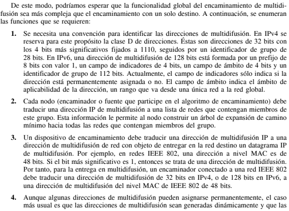

Redes Informaticas
Aqui te informaremos sobre la Multidifusión
MULTIDIFUSIÓN: ¿Qué es?
Normalmente, una dirección IP hace referencia a un computador individual en una red en particular. Pero IP también tiene cabida para direcciones que hagan referencia a un grupo de computadores en una o más redes. Tales direcciones se conocen como direcciones de multidifusión y el hecho de enviar un paquete desde un origen a los miembros de un grupo de multidifusión se conoce como multidifusión.
¿Qué aplicaciones tiene la Multidifusión?
La multidifusión tiene una serie de aplicaciones prácticas. Por ejemplo:
Requisitos para la Multidifusión
En una transmisión en unidifusión usual a través de una interconexión de redes, en la que cada datagrama tiene una única red destino, la tarea de cada dispositivo de encaminamiento consiste en reenviar el datagrama por el camino más corto desde ese encaminador hasta la red destino. En una transmisión en multidifusión, el dispositivo de encaminamiento puede necesitar reenviar dos o más copias de un datagrama recibido.
Información y Características
Características
La multidifusión realizada dentro del ámbito de un único segmento LAN es directa. El protocolo IEEE 802 y otros protocolos LAN incluyen direcciones que permiten la multidifusión a nivel MAC. Un paquete con una dirección de multidifusión se transmite en un segmento LAN. Aquellas estaciones que sean miembros del grupo de multidifusión correspondiente reconocen la dirección de multidifusión y aceptan el paquete. En este caso, sólo se transmite una copia del paquete. Esta técnica funciona debido a la naturaleza de difusión de una LAN: una transmisión desde cualquier estación se recibe por todas las estaciones de la LAN.
Más requisitos para que la Multidifusión funcione
.png)
Términos de Multidifusión
La multidifusión tiene su propio conjunto particular de términos y acrónimos que se aplican a los dispositivos y redes de enrutamiento de multidifusión IP. En una red de multidifusión, el componente clave es el dispositivo de enrutamiento, el cual es capaz de replicar paquetes y, por lo tanto, tiene capacidad de multidifusión. Los dispositivos de enrutamiento de la red de multidifusión IP, que tiene exactamente la misma topología que la red de unidifusión en la que se basa, utilizan un protocolo de enrutamiento de multidifusión para crear un árbol de distribución que conecte los receptores (preferiblemente a las implicaciones multimedia de los agentes de escucha, pero también se utiliza los agentes de escucha) a las fuentes. En términos de multidifusión, el árbol de distribución se arraiga en el origen (la raíz del árbol de distribución es el origen). La interfaz en el dispositivo de enrutamiento que conduce hacia el origen es la interfaz ascendente, aunque también se utilizan los términos menos precisos interfaz entrante o entrante. Para mantener el uso del ancho de banda al mínimo, es mejor para una sola interfaz ascendente en el dispositivo de enrutamiento recibir paquetes de multidifusión. La interfaz en el dispositivo de enrutamiento que conduce hacia los receptores es la interfaz descendente, aunque también se utilizan los términos menos precisos interfaz saliente o saliente. Puede haber interfaces descendentes de 0 Na –1 en un dispositivo de enrutamiento, N donde es la cantidad de interfaces lógicas en el dispositivo de enrutamiento. Para evitar bucles, la interfaz ascendente nunca debe recibir copias de paquetes de multidifusión descendente.